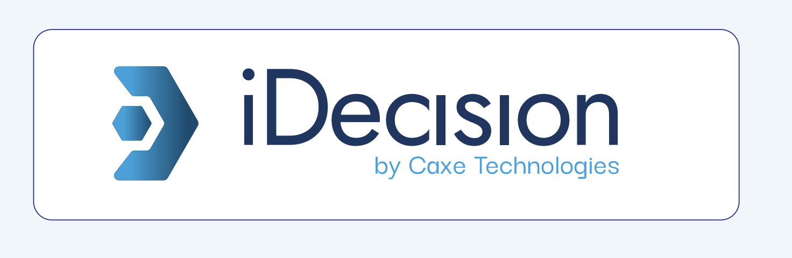
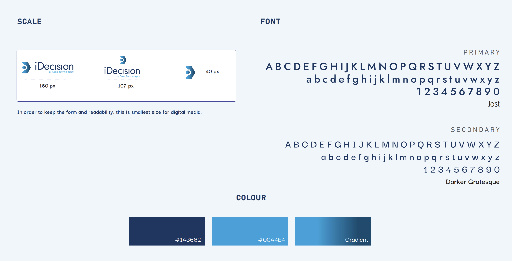
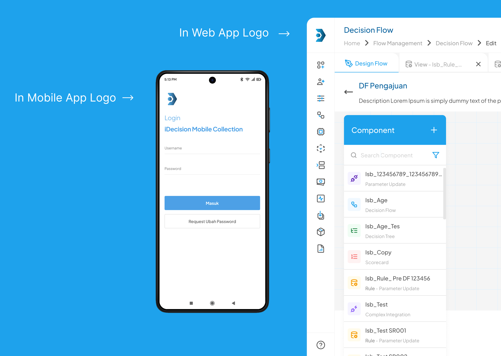
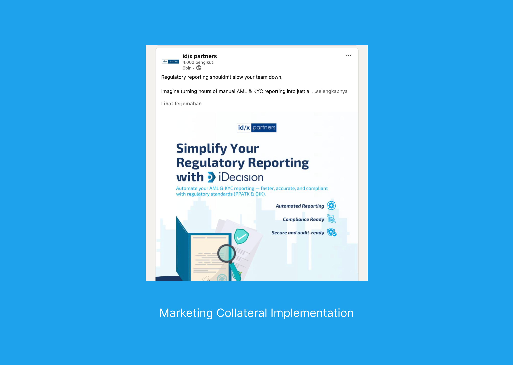

Overview
As a platform focused on risk analysis, iDecision requires a visual identity that projects trust, efficiency, and clarity. This project focuses on formulating the branding guide and implementing a solid design system, ensuring visual consistency from the core logo elements to the complex interfaces of financial technology and banking system dashboards.
Challenge
Designing banking-grade risk management tools—specifically for modules like credit scoring, fraud detection, and loan management—demands a clean, distraction-free interface. The primary challenge was crafting a brand identity that feels modern and tech-forward while maintaining the professional authority and reliability essential in the fintech industry.
Brand Identity & Philosophy

- The Letter "D": The foundational shape of the logo is derived from the letter "D" in the word "Decision," acting as the central anchor for the brand identity.
- Hexagon (Efficiency): The hexagonal shape symbolizes iDecision's commitment to working effectively and efficiently in handling risk analysis.
- Right Arrow (Right Direction): The rightward-pointing arrow represents a steadfast commitment to providing the best direction and making the right decisions for the clients.
Typhography & Color System

To maintain optimal readability on digital screens, especially when dealing with dense data tables and risk matrices, this visual system utilizes a high-contrast combination of typography and color:
- Typography: Jost is utilized as the primary font for headings to provide a modern, approachable touch. This is paired with Darker Grotesque as the secondary font for interface text, ensuring high legibility in data-heavy environments.
- Color Palette: The palette relies on a corporate blue scheme carefully chosen to establish trust. It consists of a solid dark blue (#1A3662) and a vibrant light blue (#00A4E4) , which is also applied as a dynamic gradient in the primary iconography.
- Logo Adaptability: The logo configuration is designed to be highly flexible, accommodating both White on Blue and Blue on White environments, either with or without the groupmark ("by Caxe Technologies").
- The mark is strictly scaled to retain its form and readability down to the smallest digital media size of 40px.
Implementation

